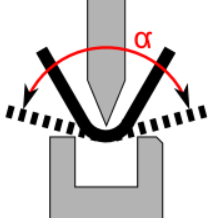

{kind=link}
In diesem Dialog kann eine Biegung Die Biegung ist ein Element der Profilprogrammierung und bezeichnet eine Formänderung im Werkstück. Einer Biegung können mehrere Attribute zugeordnet werden: Schenkellänge, Biegewinkel, Biegeradius (optional), Anbiegewinkel (optional), zusätzliche Attribute (optional). Eine Biegung kann aus mehreren Biegeprozessen bestehen. in mehreren Biegeschritten erstellt werden. Vor der eigentlichen Biegung, wird eine Vorbiegung Dieser Biegetyp erstellt eine Biegung in zwei Schritten. Die Biegung wird zuerst mit einem Anbiegewinkel gebogen und zu einem späteren Zeitpunkt mit dem Endwinkel fertig gebogen. Verwenden Sie das Vorbiegen bei komplexen Biegeteilen, um Kollisionen während dem Biegeprozess zu vermeiden. ausgeführt. Dadurch können Biegungen realisiert werden, welche nur in zwei oder mehr Schritten gebogen werden können.
Attention! Der Biegewinkel muss immer in die gleiche Richtung gebogen werden wie die Endbiegung.
Tip: Verwenden Sie das Vorbiegen bei Biegeteilen, um Kollisionen während dem Biegeprozess Als Biegeprozess werden alle Handlungen oder Abläufe bezeichnet, die für das Biegen eines oder mehrerer Biegungen notwendig sind. zu vermeiden.
- In der 2D-Ansicht die Biegung markieren, zu der eine Vorbiegung hinzugefügt werden soll.
- Mit der Option Winkel den Biegewinkel der Vorbiegung bestimmen.
- Die Schaltfläche Einfügen wählen.
- Die Biegefolge Als Biegefolge wird die Abarbeitung aller Biegekanten eines Teils in einer bestimmten Reihenfolge bezeichnet. Ein Biegeteil kann meist durch mehrere Biegefolgen gebogen werden. Beim automatischen Setzen der Biegefolge ermittelt das Programm die optimalste Biegefolge und weist es dem Biegeteil zu. mit der Funktion Prüfen auf Kollision prüfen.
- In der 2D-Ansicht auf die Biegelinie Als Biegelinie wird eine Linie bezeichnet an der entlang die Biegung der Schenkel erfolgt. mit einer Vorbiegung wählen, die geändert werden soll.
- Mit der Option Winkel den Biegewinkel der Vorbiegung korrigieren.
- Die Korrektur mit der Schaltfläche Ändern bestätigen.
- Die Biegefolge mit der Funktion Prüfen auf Kollision prüfen.
Mit dieser Option wird der Biegewinkel (α) der Vorbiegung bestimmt. Zu einem späteren Zeitpunkt wird die Biegung In einem zweiten Schritt mit dem endgültigen Winkel fertig gebogen (A).
Fig.: Biegewinkel einer Vor- und Endbiegung

- Löschen
- Ändern
- Einfügen
Mit dieser Funktion wird die gewählte Vorbiegung entfernt. Die Funktion kann nur ausgeführt werden, wenn auf der Biegelinie eine Vorbiegung gesetzt ist.
Mit dieser Funktion wird der geänderte Winkel einer Vorbiegung übernommen.
Mit dieser Funktion wird eine Vorbiegung auf einer Biegelinie erzeugt. Es können mehrere Vorbiegungen auf einer Biegelinie erzeugt werden.